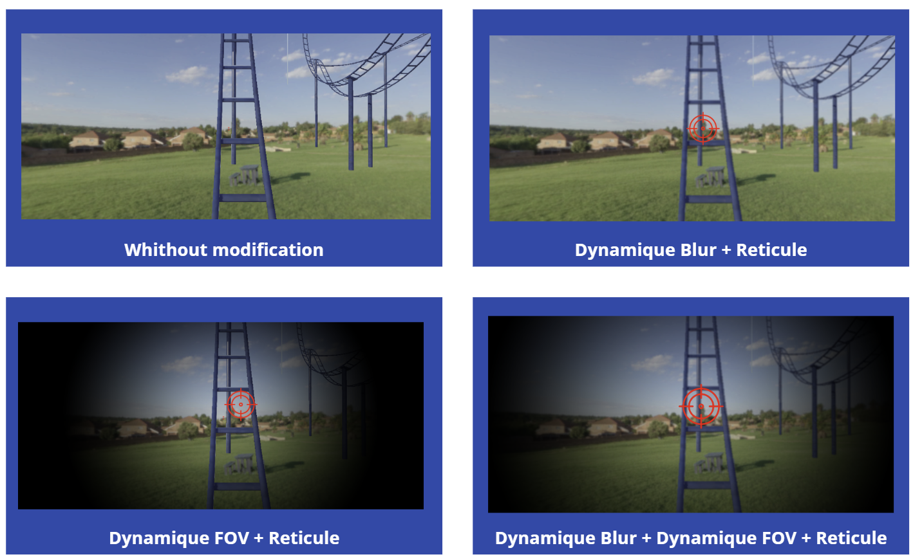

Context and objectives
This project was carried out as part of a scientific experimentation module. The goal was particularly ambitious: to conduct a complete research project from A to Z in less than a week (4 days).
In groups of 3 students, we had to manage the entire scientific process: conducting a state-of-the-art review, designing the experimental protocol, developing the VR application in Unity, running user tests, and finally, performing a statistical analysis of the collected data.
Our team chose to focus our research on cybersickness (motion sickness induced by virtual reality). Our study specifically aimed to evaluate the impact of various visual modalities (such as dynamic field of view reduction) to mitigate this discomfort during user locomotion.
The developed application
To guarantee the scientific rigor of the study, we developed a rollercoaster simulation. This choice allowed us to impose a passive, constant movement that was identical for all participants, thereby eliminating biases related to how a user might freely navigate with a controller.
To ensure that participants stayed attentive and kept their eyes open during the experience (rather than closing them to avoid nausea), they were assigned a cognitive task: they had to mentally count the number of times they were upside down (the loops).

Regarding the protocol, the developed application integrated several visual modalities that could be activated to compare their effectiveness in reducing cybersickness:
- Control: No visual modification.
- Dynamic Blur + Reticle: Blurring peripheral vision during fast movements.
- Dynamic FOV + Reticle: Reducing the field of view with a black vignette.
- Total Combination: Dynamic FOV + Dynamic Blur + Central Reticle.

My role in the project
- Research and state of the art: Analyzing existing scientific literature on virtual reality sickness and integrating solutions to reduce this discomfort.
- Conducting user tests: Welcoming testers, explaining the cognitive task, launching the simulation, and collecting data.
- Academic writing: Contributing to the analysis of results and writing the final scientific paper.
- Oral defense: Creating the entire visual presentation (slideshow) and presenting it to the jury.
Study Challenges
1. Experimental protocol design
We had to develop a standardized test environment in Unity. The challenge was to create a neutral and controlled scene capable of isolating specific variables (movement speed, type of movement) without introducing external biases into the user experience.
2. User data collection and analysis
To measure discomfort scientifically, we conducted test sessions with a panel of users. We used standardized questionnaires, such as the Simulator Sickness Questionnaire (SSQ), to cross-reference qualitative feedback with quantitative test data.
3. Writing a scientific paper in 4 days
The time allotted for experimentation, data collection, and writing the article was extremely short (4 days). This required perfect coordination within the team to synthesize our findings into a rigorous academic format.